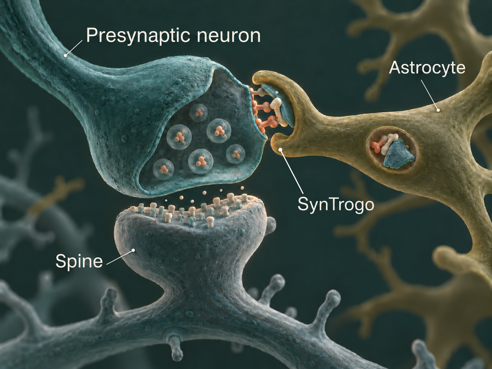
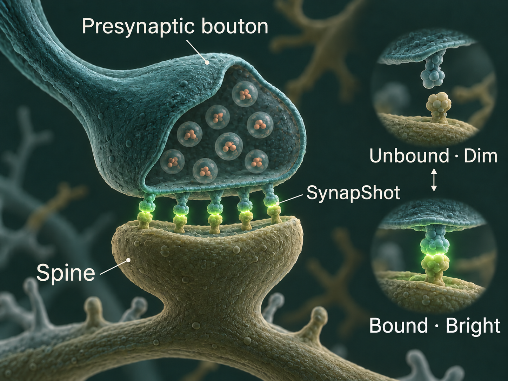
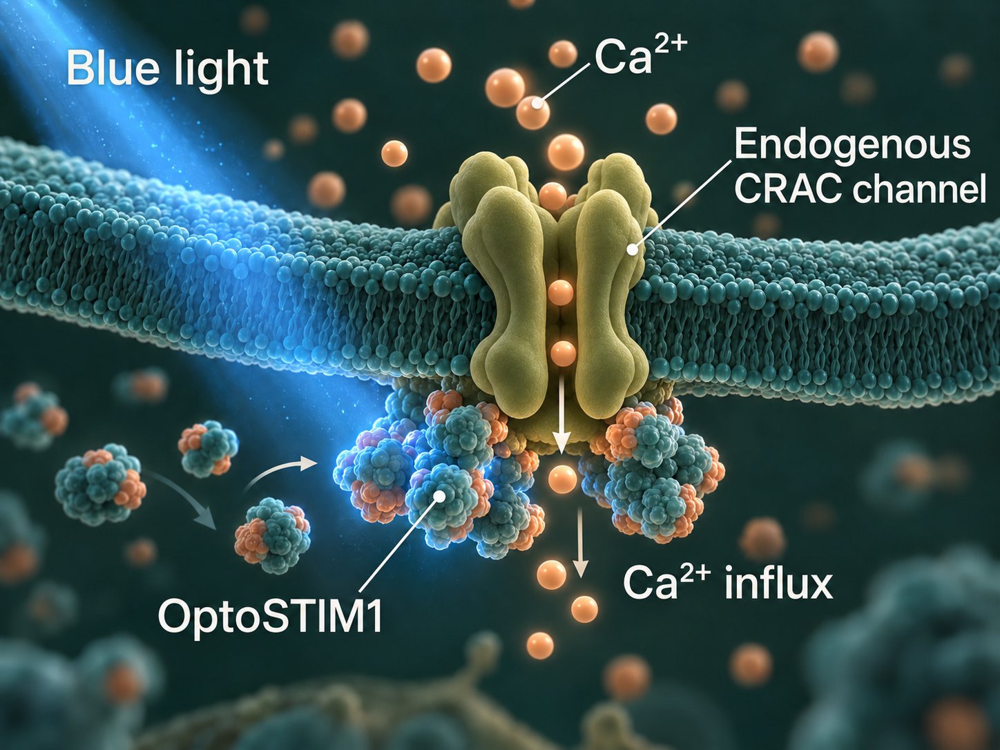
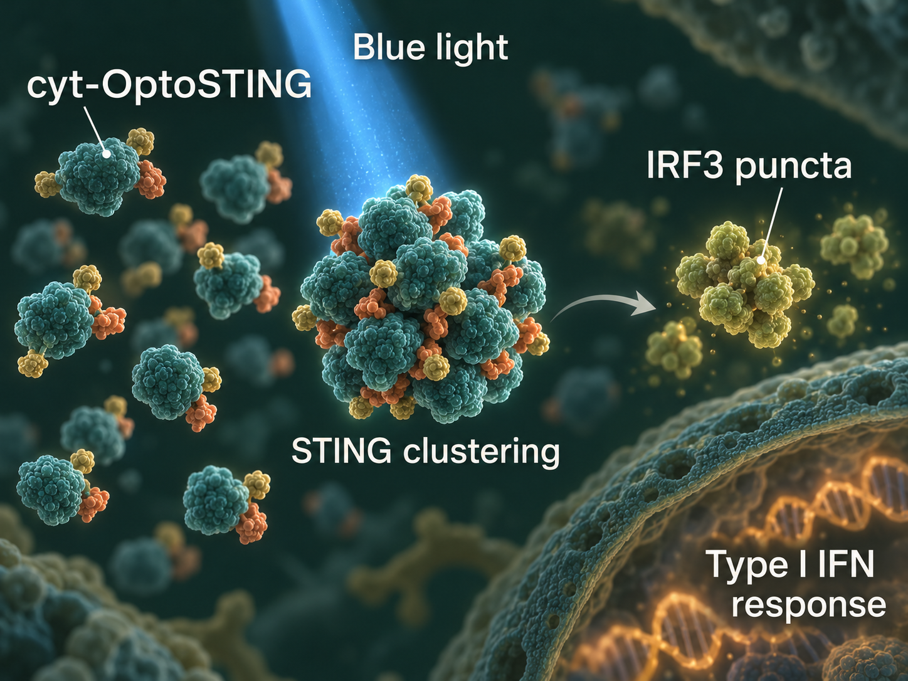
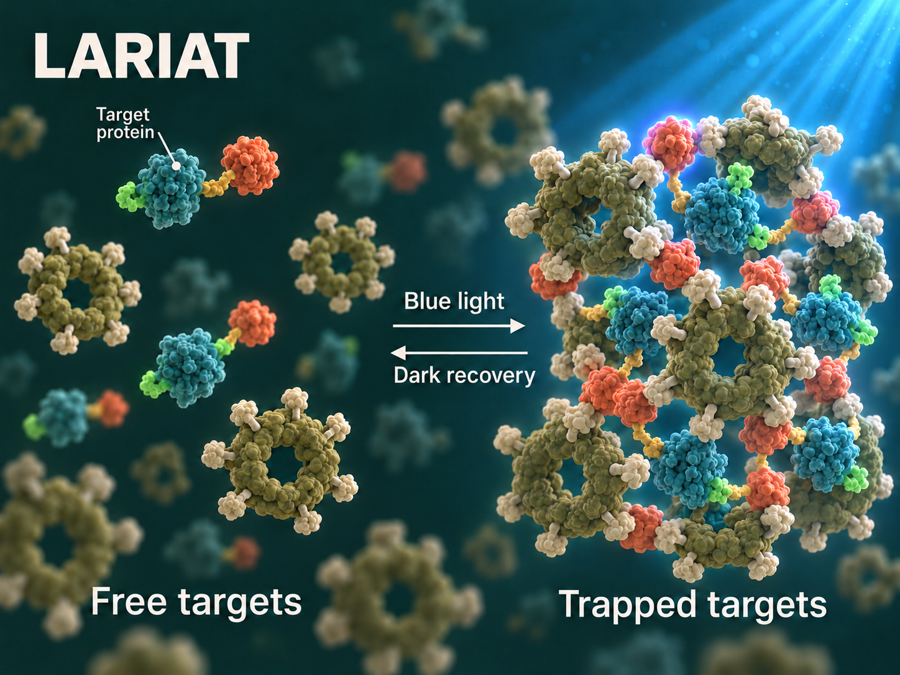

Sangkyu Lee Lab / Biomolecular Design Lab
Research
We design molecular technologies to visualize, control, and remodel cellular communication in the brain.
01 / Research philosophy
How We Engineer the Brain
-
01
Visualize
See the invisible.
We develop genetically encoded tools to visualize molecular, synaptic, and cellular dynamics in the living brain.
- SynapShot
- Molecular biosensors
- Synaptic dynamics
-
02
Control
Control with precision.
We develop molecular optogenetic technologies to manipulate specific biological processes with high spatial and temporal precision.
-
Molecular Optogenetics
- Activation
- OptoSTIM1 · monSTIM1
- Inhibition
- LARIAT
-
-
03
Remodel
Reshape connectivity.
We develop synthetic systems to selectively remodel synaptic connections and investigate how circuit structure shapes brain function.
- SynTrogo
- Connectome editing
- Synaptic remodeling
02 / Across scales
From Molecules
to Behavior
Our research spans multiple scales of brain organization — from engineered proteins and intracellular signaling to cell–cell interactions, synaptic connectivity, neural circuits, and behavior.
Molecule
Protein Engineering
Cell
Intracellular Signaling
Interaction
Neuron–Glia Communication
Synapse
Synaptic Plasticity
Circuit
Neural Connectivity
Behavior
Memory & Cognition
03 / Molecular toolbox
Our Technologies
-
SynTrogo
Remodeling synaptic connectivity
SynTrogo engineers neuron–astrocyte interactions to induce controlled remodeling of synaptic connectivity in targeted neural circuits.
View publication
SynTrogo · Remodeling synaptic connectivity -
SynapShot
Watching synapses change in real time
View publication
SynapShot · Visualizing dynamic synaptic connections in vivo, in real time -
Molecular Optogenetics
We develop molecular optogenetic technologies to manipulate specific biological processes with high spatial and temporal precision.
- Activation
- OptoSTIM1 · monSTIM1
- Inhibition
- LARIAT
OptoSTIM1

OptoSTIM1 · Light-controlled calcium signaling OptoSTING

OptoSTING · Light-controlled innate immune signaling LARIAT

LARIAT · Light-induced protein clustering for functional inhibition